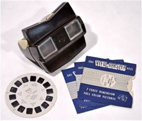
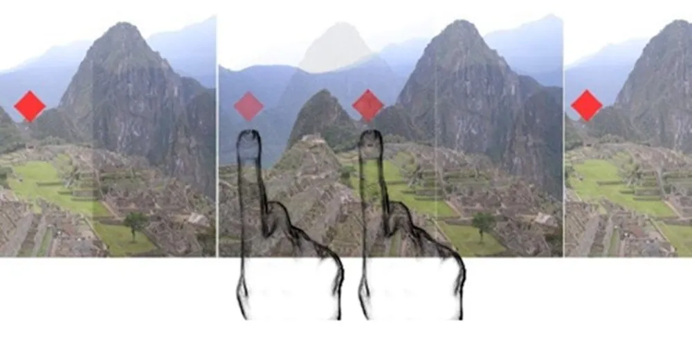
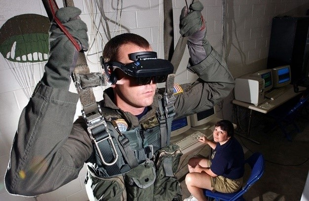

Realidade virtual é uma tecnologia de interface capaz de enganar os sentidos de um usuário por meio de um ambiente virtual criado a partir de um sistema computacional. Ao induzir efeitos visuais, sonoros e até táteis, a realidade virtual permite a imersão completa em um ambiente simulado, com ou sem interação do usuário. Atualmente, a realidade virtual tem como base displays estereoscópicos, como óculos e headsets. Porém, como você verá a seguir, o conceito abrange muito mais do que efeitos visuais e já existe há bastante tempo.
O que é realidade virtual? Em sua forma mais corriqueira, a tecnologia funciona através de estímulos visuais e auditivos. É comum o uso de headsets que cobrem completamente olhos e orelhas, privando o usuário de ouvir e ver estímulos externos.
Projetos como o PlayStation VR, da Sony, prometem transportar completamente o indivíduo para dentro de um jogo, com imersão total, tanto visual como auditiva. Nesse tipo de interface de realidade virtual é possível olhar para todos os lados sem precisar interagir com o controle, apenas virando o rosto para os lados. O headset da Sony também inclui a opção de usar fones de ouvidos para imersão mais completa.
O termo realidade virtual foi utilizado pela primeira vez no livro “Le Théâtre et son double”, do autor francês, Antonin Artaud, em 1938. Embora não seja um autor de ficção científica, Antonin praticamente criou o termo ao sugerir um teatro onde “a ilusão natural de personagens e objetos criavam uma realidade virtual”.
View Master, o tataravô do Oculus Rift — Foto: Reprodução / Wikipedia
Mesmo sem o termo existir, já haviam experimentos que “transportavam” as pessoas para outros lugares. Os famosos óculos estereoscópicos com cartões em 3D de pontos turísticos existiam desde os anos 1920. Eles são os tataravós dos óculos VR que conhecemos atualmente.
Em 1939, foi apresentado ao mundo na feira internacional de ciências de Nova York o “View-Master”. O dispositivo era um óculos estereoscópico que servia para ver slides em uma disco dentado. O aparelho virou um brinquedo extremamente popular. Recentemente, a Google e a Mattel anunciaram uma nova versão do gadget.
Uma das bases da ilusão visual de uma nova realidade é forjar a atual. Para isso, uma simples imagem plana passada diante de nossos olhos não basta. A mesma poderia simplesmente ser encarada como algo falso. É aí que entra um dos trunfos da realidade virtual.
Na estereoscopia, duas imagens levemente diferentes dão a noção de profundidade — Foto: Reprodução / digital-photography-tips
Com o uso da estereoscopia, a ilusão de profundidade é criada, apresentando mais um elemento de imersão para a realidade virtual. Para que isso acontece, duas imagens diferentes são geradas, uma para cada olho. O efeito consiste na interpretação do cérebro de que as duas imagens na realidade são uma só.
A tecnologia que primeiro começou com fotos, hoje é utilizada em filmes e ambientes tridimensionais gerados por computador. Tecnologias atuais como o Oculus Rift, permitem uma interpolação tão rápida entre as imagens, que o efeito 3D é impressionante.
O grande destaque desses óculos modernos é a capacidade de interagir em sincronia com o movimento da cabeça do usuário. Diferente dos óculos de cinema e brinquedos como o “View-Master”. Ao utilizar o Oculus Rift, por exemplo, a visão é completamente sobreposta por um visor 3D. A imagem gerada não permanece estática em um único ponto, ela acompanha a movimentação do usuário.
Soldado norte-americano em treinamento simulado de salto de paraquedas — Foto: Reprodução / Wikipédia
Embora não seja vista, a grande inovação de dispositivos de realidade virtual mais modernos está no rápido processamento de imagens e correção de distorção das lentes. Tudo escondido sobre camadas de drivers e softwares de execução em tempo real.
Nos dias atuais, provavelmente 99% das pessoas que escutam o termo realidade virtual, devem ter ouvido por causa de algum produto de entretenimento, seja filmes antigos como “O passageiro do Futuro” ou aplicações recentes para jogos no Oculus Rift ou Samsung Gear VR.
Já há interfaces que permitem ao gamer se inserir completamente em um jogo. O Virtualizer da Cyberith é uma estação onde o jogador pode literalmente se sentir dentro de um game. Confira o vídeo abaixo demonstrando a tecnologia em conjunto com Oculus Rift.
Entretanto, a realidade virtual pode ser empregada em outros campos, pois as implicações para áreas como treinamento são inúmeras. Desde os anos 1970, soldados norte-americanos fazem exercícios de treinamento em ambiente simulado, muitos deles, completamente imersos em realidade virtual.
Recentemente, a marca de óleo para carros Castrol, apresentou um projeto de um ambiente tridimensional que é criado a partir de um capacete. O piloto dirige em um circuito de testes sem ver a pista “de verdade”, confiando apenas na realidade virtual. Esta por sua vez cria um desafio totalmente diferente da realidade, com outros carros e alterações drásticas na pista.
Também há projetos em desenvolvimento ligados a sentido do tato. O projeto Level-Ups, por exemplo, permite ao indivíduo sentir o terreno em que está pisando, inclusive, mudando elevação do mesmo.
© 2023 Gustavo Oliveira. All rights reserved.